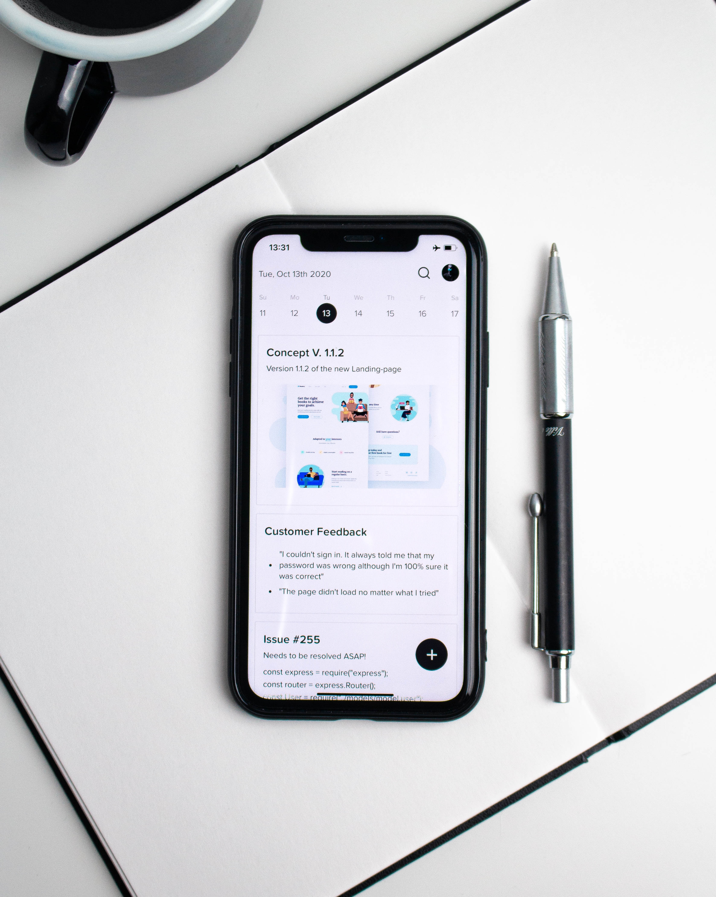

Temas
Define los objetivos

La idea de una app te puede aparecer en cualquier momento, como por ejemplo en la necesidad de recibir ayuda en tareas cotidianas o para entretener a la gente.
También puede ser la etapa siguiente de un concepto ya existente (transformar una página web a una app por ejemplo).
Si quieres dar vida a tu proyecto, es más probable que vuelva a ser un verdadero producto de marketing o bien un negocio (o al menos una parte).
Por lo tanto, como para cualquier negocio, establecer unos objetivos requiere un vistazo analítico del proyecto.
Cuando defines el mapa de ruta y los objetivos de tu app, tienes que enfocarte en tres aspectos claves para definir tus objetivos:
Producto, Crecimiento y Finanza.
Al principio, es importante entender lo que puede aportar tu idea, en términos de resultados.
Es una buena manera de empezar a pensar en los objetivos de tu producto ya que se tratará de la dirección que vas a seguir para el diseño y el desarrollo de sus funcionalidades.
Desde un punto de vista de marketing, también tienes que considerar cómo tu producto va a entrar en el mercado y cuales son las etapas claves que quieres alcanzar en términos de desarrollo de tu base de usuarios.
Desarrollar una comunidad potente es uno de los factores claves del éxito de los productos digitales, y es por esa razón que no tienes que despreciar esta etapa.
Entonces, ¿qué tendrías que determinar?
¿Cuál será tu público objetivo?
¿Cómo lo alcanzarás?
¿Cómo convertirás tus usuarios potenciales?
¿Cómo mantendrás tus usuarios para que se queden comprometidos?
Después de haber tenido una idea mejor del futuro aspecto de tu producto y de cómo vas a desarrollarlo a lo largo del tiempo, es imprescindible considerar su viabilidad financiar.
Que la app sea desarrollada como una baza para tu negocio o como un proyecto pleno, tener objetivos claros te permitirá tener una mayor influencia a largo plazo.
Busca el mercado

Una vez que hayas decidido que tu idea vale la pena para ser llevada a cabo, puedes ocuparte de su ejecución concreta.
A partir de tus búsquedas, serás capaz de validar tus hipótesis de inicio, y de ajustar (si es necesario) los objetivos que has establecido durante la etapa precedente
Tendencias de comportamiento
¿Pasan más tiempo tus usuarios en la web o en apps móviles?
¿Están dispuestos a descargar tu app?
¿Dónde buscan información?
Una buena manera de recoger todos los datos mencionados arriba es crear un perfil tipo del usuario objetivo, lo que te dará una información preciosa así como indicaciones sobre como puedes desarrollar tu producto para responder a tus deseos y necesidades.
Define el concepto
Una vez que hayas terminado tus primeros análisis, puedes sacar las conclusiones pertinentes.
Ya puedes entender cual es tu audiencia y además has establecido tus objetivos.
Ahora, hay que entender cuales son los aspectos/funcionalidades tangibles que constituirán tu modelo de negocio y como vas a alcanzarlo.
1. Monetizar
¿Podrías tener acceso pagado a tu producto?
¿Podría ser gratuito, pero incluir otras opciones de monetización, como la publicidad?
¿Podría el modelo Freemium ser una opción?
2. Hacer correr la voz
¿Cuáles serán los esfuerzos que aportar para asegurar la visibilidad de tu app?
¿Cómo puedes fomentar tus usuarios a compartir tu contenido?
¿Cuáles son los obstáculos que podrías eliminar y que podrían obstaculizar el acceso directo a tu mensaje?
3. Reforzar un negocio/proyecto existente
¿Cuáles son las comodidades/los valores añadidos que les faltan a tus usuarios?
¿Cuáles son las razones corrientes para las cuales los clientes desaparecen y cómo podrías resolver eso gracias a una app?
¿Qué impide a tus usuarios descubrirte y darte una oportunidad?
Si te basas en las respuestas a estas preguntas, puedes organizar y estructurar el concepto de tu app, incluyendo las funcionalidades claves y los beneficios buscados (para ti y el usuario).
Sé pragmático y específico lo antes posible.
Elige la tecnologia
Apps nativas:
Las apps nativas representan más del 80% de todo el tráfico móvil
Las tecnologías nativas para iOS y Android siempre han estado a la vanguardia del desarrollo móvil.
Esto se debe al hecho de que este método ofrece productos confiables y de alto rendimiento que pueden acceder a una amplia variedad de API nativas y características disponibles en smartphones o tabletas.
Además, crear una app con codificación nativa significa que creará salidas independientes para cada sistema operativo específico, lo que ayudará a ofrecer una interfaz refinada para diferentes dispositivos.
Aplicaciones web progresivas:
PWA son la combinación perfecta de tecnologías web y nativas.
Si bien tienen el aspecto de una app nativa (por ejemplo, se pueden instalar en la pantalla de inicio del dispositivo del usuario), no necesita pasar por el proceso de publicación de Tiendas.
PWA no requiere descargarse ni adaptarse a dispositivos móviles, tabletas y ordenadores de escritorio.
Benefíciate del SEO y se indexa en los motores de búsqueda.
Gracias a Service Workers PWA también funciona sin conexión
El 67% del tráfico web proviene de dispositivos móviles, PWA garantiza una presencia móvil adaptada a todos los dispositivos.
Las apps nativas dan acceso completo a las funciones de geolocalización (como geofence y la tecnología beacon), pero publicarlas implica costos adicionales significativos y el cumplimiento de terceros
Explora las obciones
Ahora que has elegido tu tecnología, es hora de elegir cómo crearás tu app.
Existen 3 opciones:
Desarrolla tu app tú mismo
Esta primera opción requiere mucho tiempo y habilidades.
Las apps nativas son específicas a la plataforma y es necesario el conocimiento de varios idiomas.
Objective-C y Swift para el desarrollo de Apple, Java o Kotlin para el desarrollo de Android.
Sin embargo, si tienes la experiencia requerida, esta opción te permitirá crear la app que deseas sin límites.
Contrata una agencia o desarrollador independiente.
No faltan agencias de desarrollo y desarrolladores independientes en la web y debería ser fácil encontrar uno.
El factor determinante aquí será el costo de dicho servicio.
De hecho, contratar a alguien para crear tu app es, desde luego, la opción más cara.
Sin embargo, si tienes los recursos, es una buena manera de obtener la app que tienes en mente sin tener el compromiso.
Utiliza un creador de apps.
Similar en concepto a los creadores como Wordpress (un sistema de gestión de contenido que te permite editar y alterar la apariencia de tu sitio web sin ninguna codificación), un creador de apps es un servicio que construye apps y permite a los usuarios sin habilidades de codificación crear fácilmente una app y distribuirla a las diferentes tiendas.
Esta es la opción ideal para ahorrar tiempo y dinero mientras se logra una app de calidad.
Sin embargo, ten en cuenta que no todos los proyectos son adecuados para un creador de apps y que si tienes necesidades específicas y complejas, tendrás que pasar por una solución personalizada.
Crea la app

Ahora se toman todas las decisiones difíciles y es hora de hacerlo.
Obviamente, el proceso variará según el método que hayas elegido para desarrollar tu app.
Para crear tu app, deberás seguir los siguientes pasos:
Diseño:
hay mucho que decidir sobre este paso, el tema de color global de la app, el estilo del encabezado, su modo de navegación, el ícono que lo representará en las tiendas y / o en las pantallas de inicio de tus usuarios, su pantalla de bienvenida etc.
Al diseñar estos elementos, siempre es una buena idea mantener el aspecto algo alineado con cualquier diseño existente que tu marca ya tenga y se identifique, como logotipos, colores, fuentes, etc.
Tu página de inicio será la página más visitada y la primera impresión que tus usuarios tendrán de tu app.
Dedica tiempo a diseñarla.
Debe mostrar tus características más importantes, así como proporcionar una navegación fluida hacia las diferentes secciones de la app
Contenido:
Es hora de agregar todo y cualquier cosa que desees transmitir sobre tu negocio / proyecto.
En algunos casos, solo ingresarás este contenido directamente en el back-end de tu app manualmente, en otros casos, es posible que ya tengas tu contenido disponible en algún lugar y solo necesites integrar esa fuente externa para extraerlo (como un feed RSS , una transmisión en vivo o una cuenta de redes sociales).
Prueba la app
Después de reunir todas las piezas del proceso de creación de apps (concepto, diseño y tecnología), llegarás a una versión que está casi lista para ser lanzada.
Pero antes de compartir tu nueva app con el mundo, lleva a cabo una serie de pruebas para verificar si todo funciona según lo planeado.
Debés probar todas las versiones de la app que planeas publicar (iOS, Android, y/o PWA).
Asegúrate de reclutar también a un par de beta testers: una nueva perspectiva te traerá elementos o puntos a tu atención que puedes haber pasado por alto o tener una visión sesgada.
Velocidad general de la app
No falle al realizar cualquier acción
Rendimiento en conectividad deficiente
Toda la funcionalidad / interacción responde a la tarea que se supone que debe realiza
El diseño es visualmente agradable y se adapta correctamente a todas las pantallas.
La navegación es intuitiva y eficiente.
Ningún aspecto de la app está "oculto"
El nombre de la app / descripción de la tienda se explica por sí mismo
publicala
Una vez que tu app esta lista, es hora de pensar en publicarla.
Es una buena idea publicar tu app en tantas plataformas como sea posible, ya que te permitirá llegar a la mayor cantidad de usuarios posible.

Cuentas de desarrolladores (paso obligatorio desde ambas plataformas).
Para los dispositivos Apple , te suscribirás al Programa de Desarrolladores para la App Store , con un costo de $ 99 por año de membresía.
Ten en cuenta que Apple requiere que el propietario del contenido de la app coincida con el propietario de la cuenta de desarrollador, por lo que si publicas varias apps iOS para diferentes proyectos, cada una deberá tener su propia cuenta de desarrollador individual.
Convertirse en desarrollador de Google Play cuesta $25 (tarifa única), y también debes ser el dueño de la cuenta de Gmail.
App Store:
El proceso de enviar una app a la App Store es un poco complejo y requiere una preparación completa.
Apple ha establecido altos estándares y pautas estrictas para mantener la App Store como un ecosistema seguro que ofrece a sus usuarios solo apps de alta calidad.
Revisión de la tienda de apps:
Apple revisa cada app antes de aprobar su lanzamiento.
Antes de enviar tu app para su revisión, deberás proporcionar una recopilación de información (icono, vista previa / capturas de pantalla de la app) y metadatos (el nombre de tu app, categoría, una descripción detallada y palabras clave adicionales para ASO).
No subestimes la importancia de los metadatos, especialmente la descripción de la app.
Publicación en la App Store:
El proceso de revisión puede demorar unos días, Apple te notificará por correo electrónico cuando tu app sea pública.
En caso de rechazo, podrá ponerse en contacto con el Centro de resoluciones para obtener más información e intentar solucionar los problemas.
presentacion
Alumno: Juan David Calle Correa